0 מתוך 0 שלבים
מדריך שטח בעברית
DJI MICMINI
שני משדרים, מקלט ומארז. איך מחברים, מה אומרת כל נורה ומה עושים כשהקול יוצא רק מצד אחד.
10 g משקל משדר400 m טווח בשטח פתוח48 h עם המארז
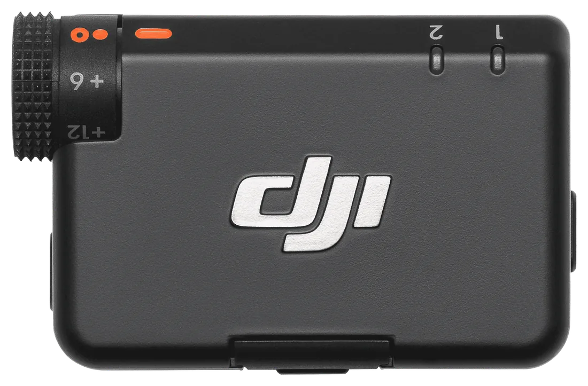
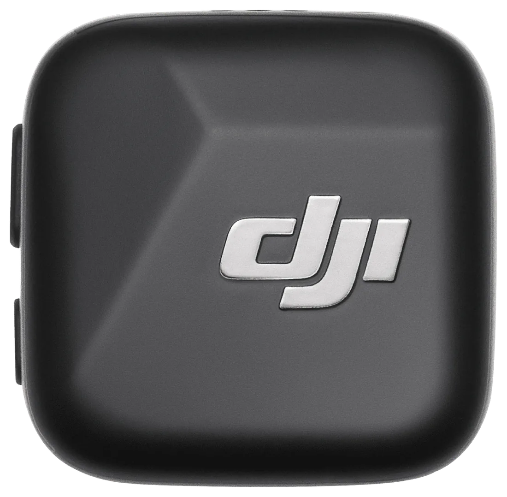
לפני שמצלמים
מה מצלמים היום?
שלוש בחירות, ומקבלים את השלבים לפי הסדר. אפשר לסמן כל שלב תוך כדי עבודה.
הכירו את הציוד
כל כפתור, כל נורה
לוחצים על נקודה בתמונה או על שורה ברשימה. רוב הכפתורים יושבים בצדדים, אז הנקודות על הקצוות.
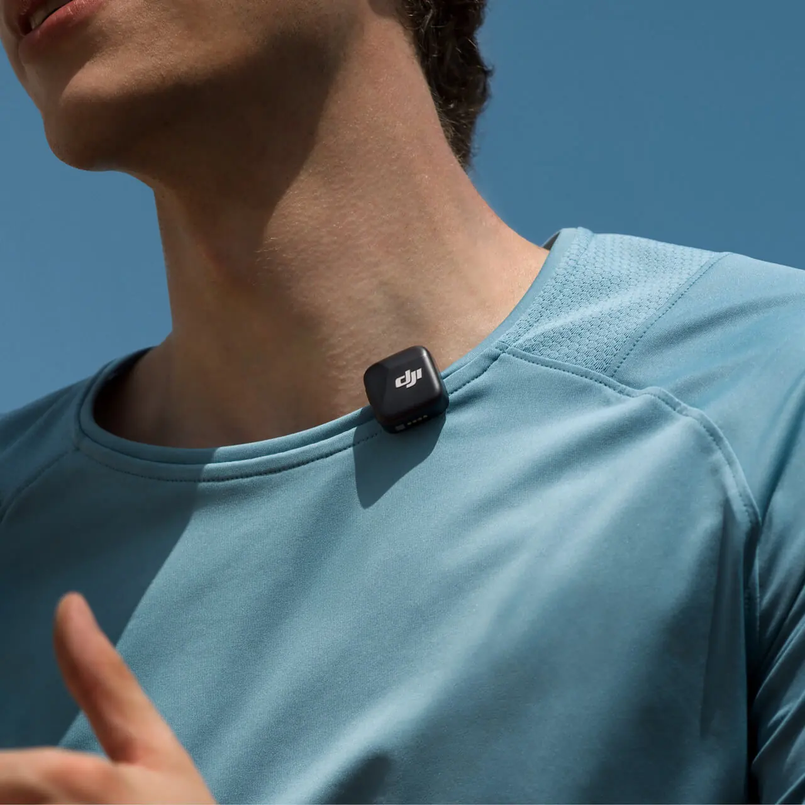
על הבגד
איפה שמים את המשדר
- PLACE
באמצע החזה העליון
בערך שתי כפות יד מתחת לסנטר. קרוב מדי נשמעות נשימות, רחוק מדי נכנס החדר. המיקרופון קולט לכל הכיוונים, אז לא צריך לכוון אותו לפה.
- MAGNET
מגנט או קליפס
בחולצה דקה: המגנט מבפנים והמשדר מבחוץ, והוא לא מושך את הבד למטה. בצווארון או בבד עבה: הקליפס. בערכה יש שני מגנטים.
- WIND
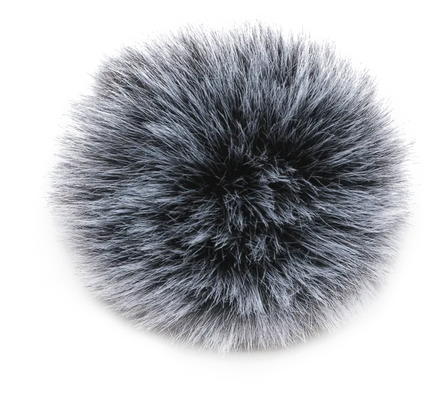
בחוץ תמיד עם ספוג רוח
סינון הרעשים לא מבטל רוח. את הספוג אפשר להשאיר על המשדר גם כשמחזירים אותו למארז.
- CLOTH
לא מתחת לבגד, לא ליד שרשרת
בד שמתחכך במיקרופון נשמע כמו רשרוש, ושרשרת או רוכסן נשמעים כמו נקישות. עדיף משדר גלוי וקול נקי.
שפת הנורות
מה הנורה אומרת?
הצבעים וההבהובים כאן מונפשים בדיוק כמו במכשיר. אותו צבע יכול להגיד דברים שונים במשדר ובמקלט, אז קודם בוחרים מכשיר.
משדר TX · STATUS LED
חיבור
ירוק קבוע
מחובר למקלט. הכל טוב.
ירוק מהבהב לאט
לא מחובר למקלט. המקלט כבוי, רחוק, או שצריך לצמד מחדש.
כחול וירוק לסירוגין
מחפש חיבור (צימוד), למקלט או ל-Bluetooth.
כחול קבוע
מחובר ישירות ב-Bluetooth לטלפון או ל-Osmo.
כחול מהבהב לאט
במצב Bluetooth, ואין מכשיר מחובר.
סוללה ועדכון
אדום קבוע
פחות מ-10% סוללה. להחזיר למארז.
צהוב קבוע
מתעדכנת קושחה. לא לכבות.
נורית שנייה, בצד השני
צהוב NC
סינון רעשים פעיל. כבויה = הסינון כבוי.
בזמן טעינה
הבהוב אחד לאט
0 עד 25%
הבהוב כפול
26 עד 50%
שלושה הבהובים
51 עד 75%
ארבעה הבהובים
76 עד 100%
כבויה
טעון במלואו. בטעינה הצבע ירוק או כחול לפי המצב שבו המשדר עבד.
מקלט RX
נוריות 1 ו-2: מצב כל משדר
ירוק קבוע
המשדר הזה מחובר.
כבויה
המשדר הזה לא מחובר.
ירוק מהבהב מהר
צימוד מתבצע.
צהוב קבוע
סינון רעשים פעיל במשדר הזה.
אדום קבוע
סוללת המשדר הזה מתחת ל-10%.
נורית המקלט: מצב הקלטה
ירוק קבוע
Mono או Safety Track. לפי הצבע אי אפשר להבדיל ביניהם.
תכלת קבוע
Stereo: כל משדר בערוץ נפרד.
ירוק או תכלת מהבהב לאט
אין מכשיר מקליט מחובר: לא מזהה טלפון, מצלמה או מחשב.
כחול קבוע
מחובר ב-Bluetooth לאפליקציית DJI Mimo.
כחול מהבהב לאט
מוכן לחיבור Bluetooth, אין מכשיר מחובר.
אדום קבוע
סוללת המקלט מתחת ל-10%.
צהוב קבוע
מתעדכנת קושחה. לא לכבות.
בזמן טעינה
ירוק מהבהב 1 עד 4 פעמים
כמו במשדר: הבהוב אחד עד 25%, ארבעה עד 100%. כבויה = מלא.
מארז 4 LED
רמת הסוללה של המארז
ארבע דולקות
76 עד 100%
שלוש
51 עד 75%
שתיים
26 עד 50%
אחת
10 עד 25%
אחת מהבהבת
פחות מ-10%. לחבר לחשמל.
כשהמארז עצמו בטעינה
הנורה האחרונה מהבהבת
הנוריות הדולקות הן מה שכבר נטען. בדוגמה: 51 עד 75%.
כולן כבויות
המארז טעון במלואו.
ערוצי שמע
Mono, Stereo, Safety
שמים אוזניות ולוחצים על השמעה. שני דוברים מדומים, ואפשר לשמוע איך כל מצב מחלק אותם בין האוזן השמאלית לימנית.
עם אוזניות שומעים את ההבדל. ברמקול של טלפון הכל נשמע באמצע.
Lשמאל
Rימין
!ערוץ אחד שקט. זה בדיוק "שומעים רק באוזן אחת": משדר אחד שהוקלט ב-Stereo. עם דובר אחד מצלמים Mono, ואם כבר צולם, מתקנים ב-CapCut.
בעריכה
קול רק באוזן אחת? מתקנים ב-CapCut
זה לא מיקרופון מקולקל. הקובץ הוקלט ב-Stereo, וכל משדר נכנס לצד אחר. ב-CapCut במחשב יש אפשרות שמעתיקה ערוץ אחד לשני.
שלושה קליקים
מאיזה צד שומעים את הקול?
- מסמנים את הקליפ בטיימליין ופותחים את Audio בפאנל הימני, לשונית Basic.
- מסמנים את Channels.
- בוחרים Fill right with left. הצד השמאלי, שבו יש קול, מועתק גם לימין.
- מייצאים קטע קצר ומקשיבים באוזניות.
המחשה של הפאנל. המיקום המדויק יכול לזוז מעט בין גרסאות.
כל דובר ברצועה משלו
- קליק ימני על הקליפ ← Separate audio, כדי שהקול יהיה ברצועה נפרדת.
- מעתיקים את רצועת הקול ומדביקים עותק מתחתיה, בדיוק באותה נקודה בזמן.
- ברצועה הראשונה: Channels ← Fill right with left. עכשיו היא רק דובר 1, בשתי האוזניים.
- ברצועה השנייה: Fill left with right. היא רק דובר 2.
- מאזנים עוצמה, מנקים רעשים וחותכים כל דובר בנפרד.
ההוראות ל-CapCut במחשב. באפליקציה בטלפון האפשרות לא מתועדת, אז מי שעורך בטלפון: לצלם Mono מראש.
תקלות
משהו לא עובד
כותבים מה קורה, או בוחרים מהרשימה.
שומעים רק באוזן אחת
המקלט כנראה ב-Stereo (הנורית שלו תכלת), ועם משדר אחד הקול נכנס רק לצד אחד.
לפני הצילום: לחיצה כפולה על Link במקלט, עד שהנורית ירוקה (Mono).
כבר צולם: מתקנים ב-CapCut עם Channels.
נורית 1 או 2 במקלט כבויה
המשדר הזה לא מחובר למקלט.
הכי מהיר: מכניסים את המשדר ואת המקלט למארז. הם מתחברים לבד.
ידנית: לחיצה של 2 שניות על Link במשדר, עד הבהוב כחול וירוק. ואז 2 שניות על Link במקלט, עד שנורית המשדר מהבהבת ירוק מהר. ירוק קבוע = מחובר.
המשדר מהבהב כחול ולא מתחבר למקלט
המשדר במצב Bluetooth, ומחפש טלפון או Osmo. כחול קבוע אומר שהוא כבר מחובר ישירות לטלפון, ואז הוא לא שולח למקלט.
מכניסים אותו ואת המקלט למארז, והם מתחברים מחדש זה לזה. אם הוא מחובר לטלפון, קודם מנתקים אותו בהגדרות ה-Bluetooth של הטלפון.
נורית המקלט מהבהבת לאט
המקלט לא מזהה מכשיר מקליט. בודקים שהכבל או המתאם נכנסו עד הסוף, ושהמצלמה או הטלפון דלוקים.
במצלמה: הכבל מחובר לכניסת המיקרופון (MIC), לא לכניסת האוזניות.
הטלפון לא מקבל את המיקרופון
מוציאים את המקלט ומכניסים שוב. מנסים במצלמה של הטלפון עצמו, כדי לדעת אם הבעיה באפליקציה.
באייפון עם Lightning צריך מתאם Lightning, שנמכר בנפרד. בלי מתאם: מחברים משדר ישירות ב-Bluetooth, ובוחרים DJI Mic Mini-XXXXXX ברשימת המכשירים של הטלפון.
הקול צורם או מתעוות
מורידים את ה-gain במצלמה ומעלים את ה-gain במקלט בגלגלת. כך DJI ממליצים, וזה מונע עיוות.
ההגבלה האוטומטית (Automatic Limiting) מגינה מקפיצות פתאומיות. היא דלוקה כברירת מחדל, ואפשר לבדוק אותה באפליקציית DJI Mimo.
באירוע עם צעקות או מוזיקה: Safety Track. עיוות שכבר הוקלט כמעט אי אפשר לתקן.
רעשי רוח
מלבישים ספוג רוח. סינון הרעשים עוזר לרעשי רקע כמו מזגן ותנועה, אבל לא מעלים רוח.
רשרוש או נקישות
המשדר נוגע בבד שזז, או בשרשרת ורוכסן. מצמידים עם המגנט כדי שלא יזוז, ומרחיקים מתכשיטים.
יש רעש רקע (מזגן, מאוורר, רחוב)
לחיצה קצרה על כפתור ההפעלה במשדר מדליקה סינון רעשים. נורית צהובה בצד = פעיל.
באפליקציית DJI Mimo בוחרים רמה: Basic לחדר עם מזגן או הד, Strong למקום רועש. במשדר שמחובר ישירות לטלפון הרמה קבועה על Strong.
המשדר או המקלט כבו לבד
אם הופעל כיבוי אוטומטי באפליקציית DJI Mimo, הם נכבים אחרי 15 דקות בלי חיבור. אחרת, כנראה נגמרה הסוללה (לפני כן הנורית אדומה).
אפשר להקליט בלי טלפון או מצלמה?
לא. למשדר אין זיכרון פנימי, הוא רק משדר. תמיד צריך מכשיר שמקליט בפועל.
נורית צהובה
בנורית הקטנה בצד המשדר: סינון רעשים פעיל. בנורית המצב הראשית, צהוב קבוע: מתעדכנת קושחה, לא לכבות.
איך מעדכנים קושחה
באפליקציית DJI Mimo: נכנסים להגדרות המכשיר ← About Devices ← לוחצים על גרסת הקושחה.
באייפון העדכון עובד רק ב-Bluetooth: מנתקים את המתאם, מחברים את המשדר דרך הגדרות ה-Bluetooth, ואת המקלט מעבירים למצב Bluetooth בלחיצה של 6 שניות על כפתור ההפעלה כשהוא כבוי.
לא מצאנו. נסו מילה אחרת, למשל "נורית", "אוזן" או "רוח".
בקופסה
מה יש בערכה
הערכה עם שני משדרים, מקלט ומארז טעינה. ככה נראה כל פריט, כדי שיהיה קל לבדוק שהכל חזר לתיק.
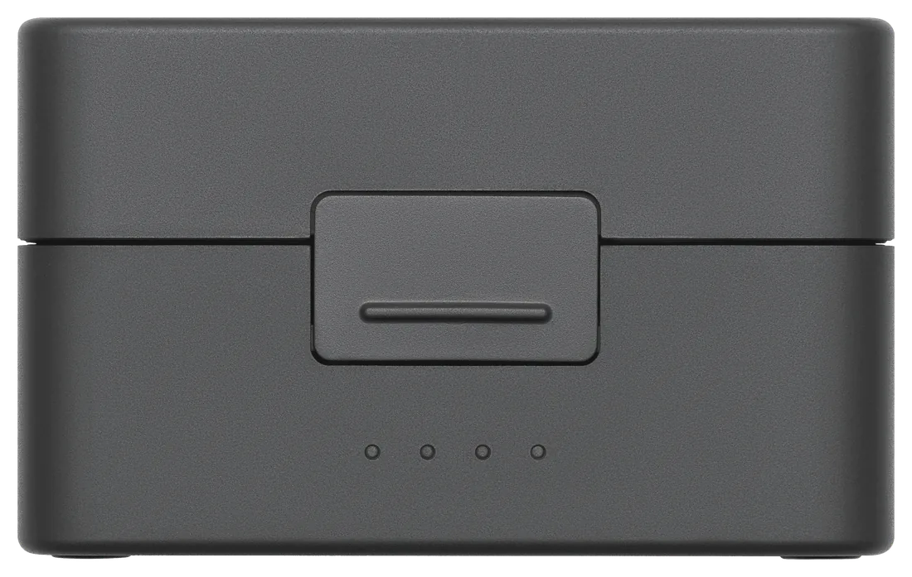
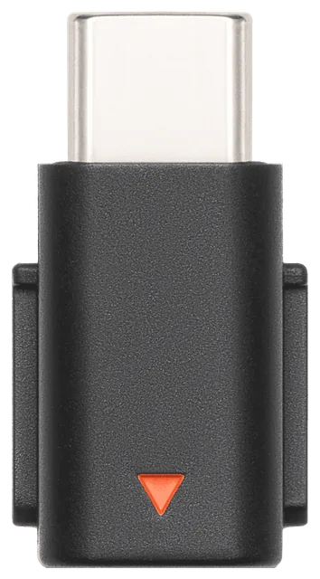
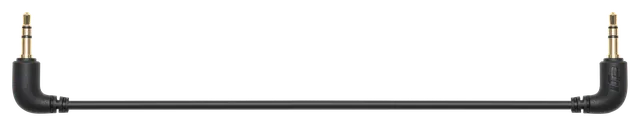
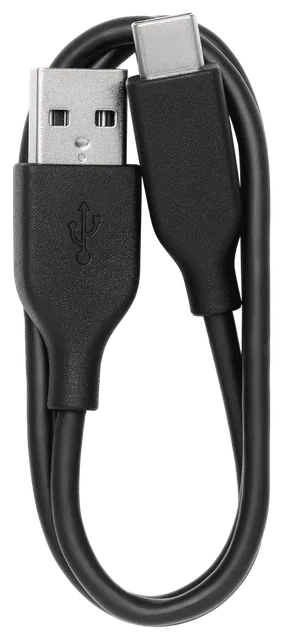
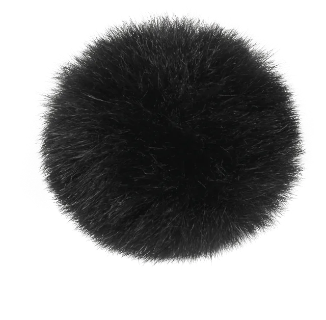
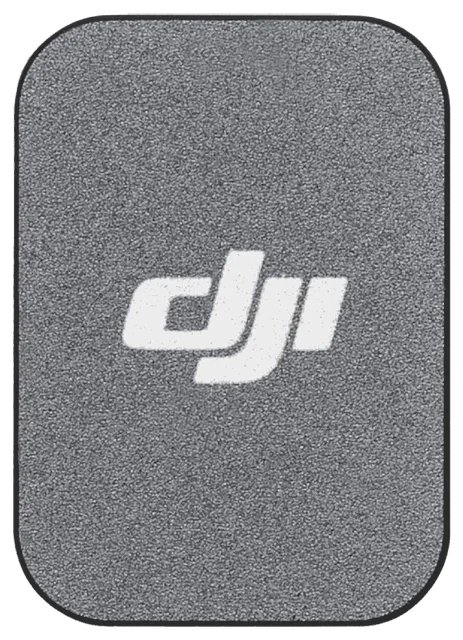
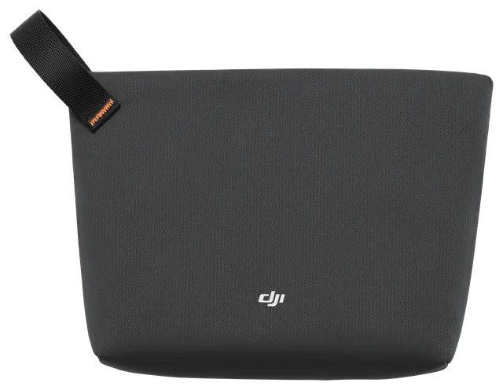
מתאם Lightning לאייפון ישן לא נמצא בקופסה ונמכר בנפרד.
מפרט
במספרים
10gמשקל משדר, בלי המגנט
400mטווח מקסימלי, שטח פתוח בלי הפרעות
11.5hמשדר על סוללה אחת
48hעם הטעינות מהמארז
- סוללת מקלט
- ~10.5 h
- טעינת משדר / מקלט / מארז
- ~90 min / ~100 min / ~2 h
- כמה טעינות מלאות במארז (2 משדרים ומקלט)
- ~3.6
- משקל מקלט
- ~17.8 g
- משדרים למקלט אחד
- 2
- כיווניות
- Omni
- עוצמת קול מקסימלית
- 120 dB SPL
- תחום תדרים
- 20 Hz to 20 kHz
- חיבור ישיר ל-Osmo, זמן סוללה
- 7 to 8 h
- טמפרטורת עבודה
- -10 to 45 °C
- דגמים
- TX DMMT01 · RX DMMR01 · Case DMMC01
- אלחוט
- 2.4 GHz · Bluetooth 5.3
הנתונים של DJI, נמדדו בתנאי מעבדה. בשטח הטווח והסוללה יוצאים בדרך כלל קצרים יותר.